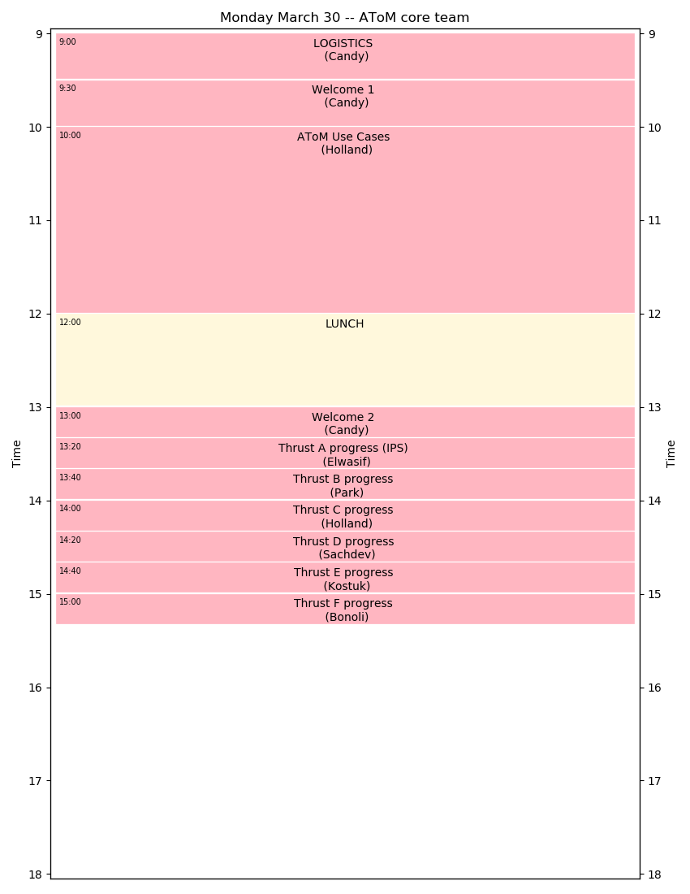
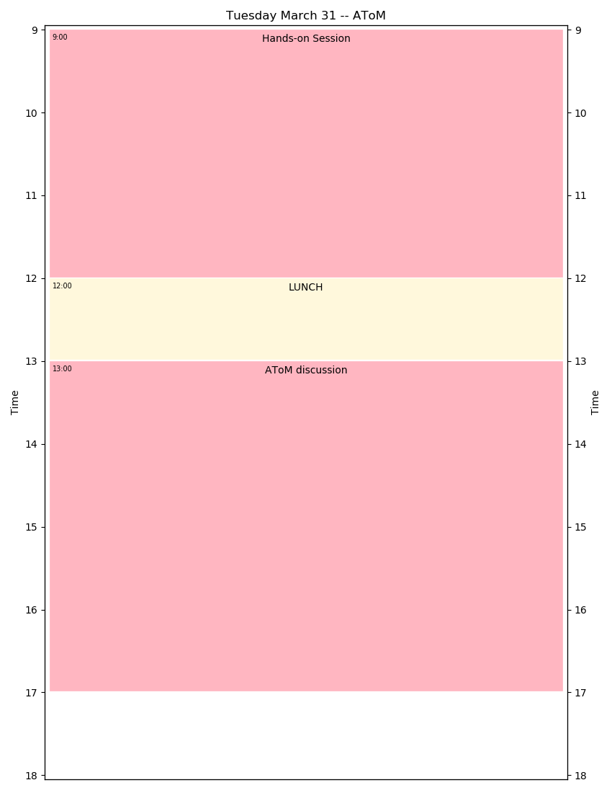
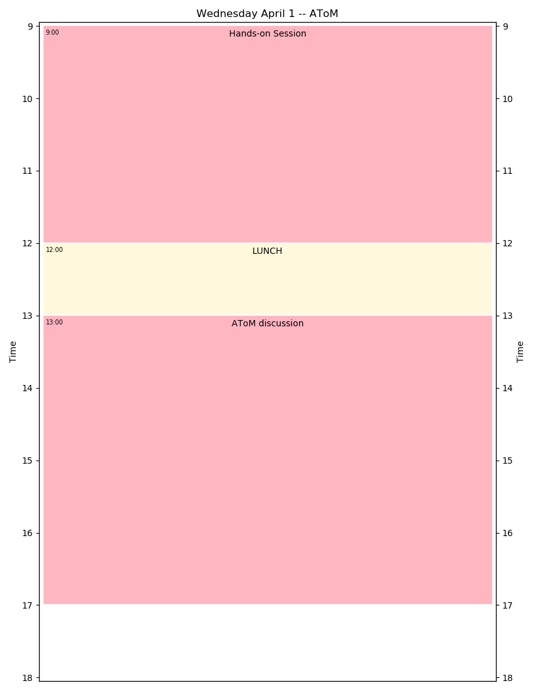
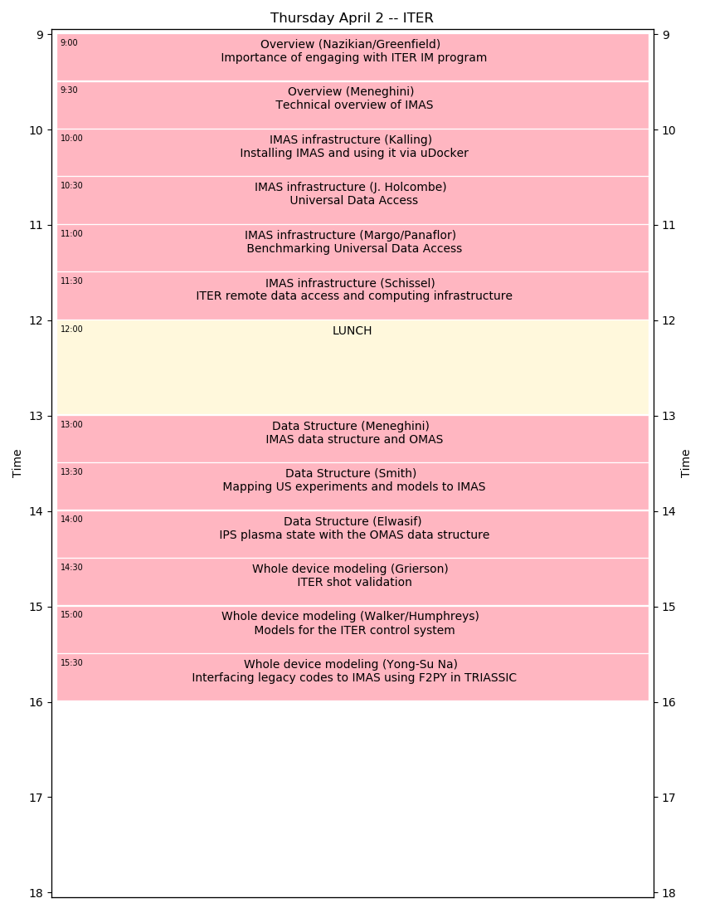
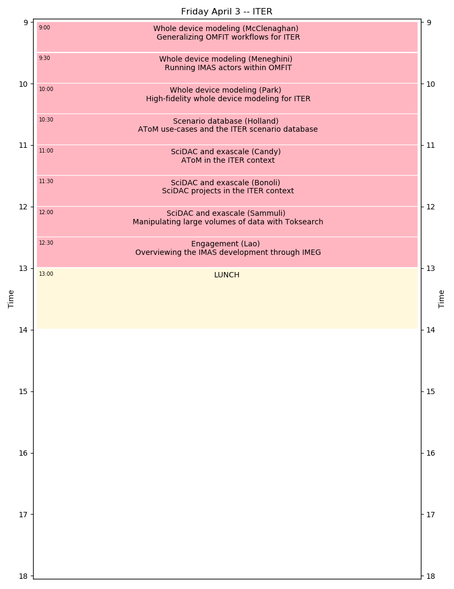

Upcoming AToM Meetings¶
AToM 2020: US Integrated Modeling in the ITER Era¶

| Time: | Monday 30 March – Friday 3 April 2020 |
|---|---|
| Location: | Marriott La Jolla |
| Agenda Overview: | |
| Following in the tradition of a supplementary topic for the yearly AToM project meeting, we will explore US Integrated Modeling in the ITER Era on the final two meeting days (April 2-3). We will identify the challenges and requirements for the US integrated modeling program to effectively support ITER experiments, and fully exploit ITER data. This includes | |
- Overview of the ITER integrated modeling technology
- Potential problems/solutions for remote use of ITER data
- US modeling program gaps for ITER shot validation and planning
- High-fidelity gyrokinetic simulation needs
- Data mapping required for US fusion facilities/codes to use IMAS format
- Produce executive summary of findings, and report to DoE and ITER
Day 1 – Monday March 30 [AToM core team]

Day 2 – Tuesday March 31 [AToM core team]

Day 3 – Wednesday April 1 [AToM core team]

Day 4 – Thursday April 2 [ITER]

Day 5 – Friday April 3 [ITER]

Past Meetings¶
List of AToM Past Meetings
AToM Team¶
2017-present¶
| Project PI: | |
|---|---|
| FES PIs: | David L. Green, Oak Ridge National Laboratory, @dlg0
Mikhail Dorf, Lawrence Livermore National Laboratory
Christopher Holland, University of California, San Diego
Charles Kessel, Princeton Plasma Physics Laboratory
|
| ASCR PIs: | David E. Bernholdt, Oak Ridge National Laboratory
Milo Dorr, Lawrence Livermore National Laboratory
David Schissel, General Atomics
|
| Contractors: | Paul Bonoli, Massachusetts Institute of Technology
Richard Kalling, Kalling Software, @kalling
Yang Chen, University of Colorado, Boulder
Don Batchelor, Oak Ridge National Laboratory
|
| Funded Collaborators: | |
O. Meneghini, General Atomics, @orso82
S.P. Smith, General Atomics, @smithsp
P.B. Snyder, General Atomics
D. Eldon, General Atomics @eldond
E. Belli, General Atomics
M. Kostuk, General Atomics, @kostukm
W. Elwasif, Oak Ridge National Laboratory, @elwasif
G. Fann, Oak Ridge National Laboratory
M. Cianciosa, Oak Ridge National Laboratory, @cianciosa
J.M. Park, Oak Ridge National Laboratory
K. Law, Oak Ridge National Laboratory, @klaw1980
M. Umansky Lawerence Livermore National Laboratory
A. Pankin Lawerence Livermore National Laboratory, @pankin
D. Orlov, University of California, San Diego
N. Howard, Massachusetts Institute of Technology
J. Sachdev, Princeton Plasma Physics Laboratory, @jsachdev
|
|
2014-2017¶
| Project PI: | Jeff Candy, General Atomics
General Atomics, P.O. Box 85608
San Diego, CA 92186
Ph: 858-455-2593
|
|---|---|
| FES PIs: | David L. Green, Oak Ridge National Laboratory, @dlg0
Mikhail Dorf, Lawrence Livermore National Laboratory
Christopher Holland, University of California, San Diego
|
| ASCR PIs: | David E. Bernholdt, Oak Ridge National Laboratory
Milo Dorr, Lawrence Livermore National Laboratory
David Schissel, General Atomics
|
| Funded Collaborators: | |
O. Meneghini, General Atomics, @orso82
S. Smith, General Atomics, @smithsp
P.B. Snyder, General Atomics
W. Elwasif, Oak Ridge National Laboratory, @elwasif
E. D’Azevedo, Oak Ridge National Laboratory
J.M. Park, Oak Ridge National Laboratory
D. Batchelor, Oak Ridge National Laboratory
M. Umansky Lawerence Livermore National Laboratory
V. Izzo, University of California, San Diego
D. Orlov, University of California, San Diego
|
|